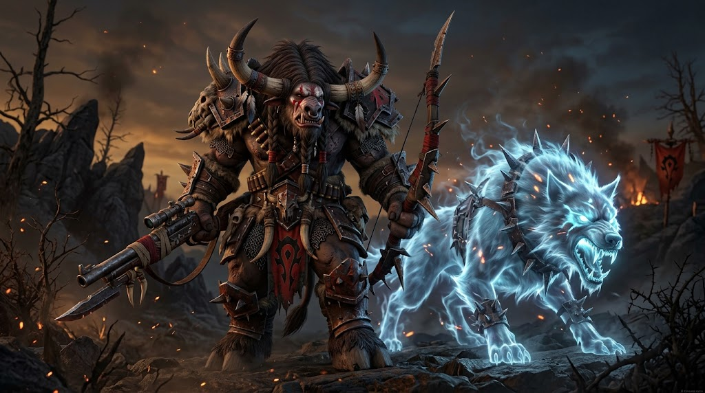

Kor'kron Guard · Record of Service
Grimscar Greystone
Tauren Hunter · Pathfinder of the Kor'kron Guard

“The orcs gave my people a home when the centaur would have given us graves. I walk ahead of them now, so they never walk into one.”
At a Glance
- Name
- Grimscar Greystone
- Race & Class
- Tauren Hunter
- People
- Shu'halo of the Greystone family, a small herd-clan that rides with the Bloodhoof tribe of Cairne Bloodhoof
- Age
- A bull in the full strength of his years. He was barely past his first hunt when the Third War came to Kalimdor.
- Allegiance
- High Chieftain Cairne Bloodhoof and Warchief Thrall, through High Overlord Varok Saurfang
- Station
- Pathfinder of the Kor'kron Guard: tracker for the Vanguard, eyes ahead of the Outriders
- Companion
- Dustmane, a great maned lion of the Barrens savannah
- Known as
- “Greystone” to the Guard, “the Pathfinder” to the Outriders, “Stone-Keeper's son” to the old tauren of Thunder Bluff
- Build
- Huge even for a tauren. Grey-brown hide, broad as a kodo's flank, light on his hooves for his size.
Appearance
Grimscar's hide is the color of weathered granite, dusty grey-brown and dappled darker along the shoulders, the coloring that gave the Greystone family its name long before he was born. His horns sweep forward and up, the right one ringed with three carved bands of bone: one for each of the great hunts he has led.
The scar runs in three ragged furrows down the left side of his face and neck, from the base of the horn to the shoulder, where a Kolkar centaur's war-flail tore through hide and muscle when he was still a calf. The fur never grew back over it. Tauren children in Thunder Bluff sometimes ask to touch it. He lets them.
He wears mail of kodo leather and riveted iron, a Kor'kron Guard tabard over it, and a hunter's cloak of plainstrider feathers. His rifle is a long, heavy goblin piece out of Ratchet, a weapon he traded three seasons of hides for. On his back hangs a bow of Mulgore ash that belonged to his father, unstrung; he has not fired it since the day it came to him.
Dustmane pads at his side: a great tawny lion of the Barrens, scarred about the muzzle, with a black-tipped mane that is going grey at the edges, much like the tauren who tamed him.
Voice & Manner
- Deep, slow voice. Grimscar speaks the way the plains move, unhurried, and he never says anything twice.
- Listens before he speaks. To the wind, the grass, the ground under his hooves, and the people around him, in that order.
- Gentle until he isn't. Calves, Scouts and wounded beasts find him endlessly patient. Those who hunt for sport, poison wells, or dig wounds into the Earth Mother find out what a tauren's anger looks like.
- Prays at dawn and dusk. A word to An'she as the sun rises, a word to Mu'sha as the moon comes up, even on the march. The orcs of the Guard have learned to wait.
The Tale of Grimscar Greystone
Chapter IThe Stone-Keepers
Before the Shu'halo had a home, they had the long walk.
For generations the tauren wandered the grasslands of Kalimdor, following the great herds, hounded every season by the centaur. Grimscar's people, the Greystones, were a small family among the herds of the Bloodhoof, and they had a sacred charge: they kept the cairns, the piled grey stones that marked the old migration paths, the watering holes, and the graves of the tauren who fell along the way. Wherever the Greystones walked, they set a stone. Wherever a stone stood, the herds would find their way.
His father was the family's stone-keeper, a quiet bull with a bow of Mulgore ash who could read a trail a week old across bare rock. His mother sang the walking songs. Grimscar was the youngest of three, and the only one who would see Mulgore.
Chapter IIThe Night of the Centaur
He was still a calf when the Kolkar came for the caravan in the Barrens.
They came at night, as the centaur always did, their war-drums rolling out of the dark. The kodos panicked. The fires scattered. Grimscar remembers his father putting the ash bow into his hands, then turning back toward the drums, and he remembers that his father did not come back.
A Kolkar raider found the calf beneath an overturned kodo-cart and swung his flail. The scar is what's left of that blow. The second blow never fell. Out of the dark came a sound Grimscar had never heard before: the war-cry of orcs.
They were Thrall's warriors, newly landed in Kalimdor, and they cut through the centaur like a scythe through grass. A grey-haired orc grunt lifted the overturned cart off him one-handed, looked at the bleeding calf clutching a bow too big for him, and said something in a language Grimscar couldn't understand. He has spent the rest of his life believing it was a blessing.
Thrall's Horde escorted Cairne Bloodhoof's people the rest of the way to Mulgore. Grimscar's mother and one sister lived to see the green hills. His father and brother did not. When the caravan reached the safety of Mulgore, the young calf set one last grey stone at the foot of the hills for them. It is still there.
Chapter IIIThe Rites of the Earth Mother
Mulgore became home. Grimscar grew up beneath the mesas where Cairne's people would raise Thunder Bluff, and when he came of age, he walked the Rites of the Earth Mother at Camp Narache like every young tauren before him. He hunted the plainstriders and the prairie wolves of Red Cloud Mesa, and came back with a hunter's eyes.
The hunters of Bloodhoof Village taught him the old ways of the beast-bond: how to call a wild creature, how to hear its heart, how to earn its trust instead of breaking it. The master hunters of Hunter's Rise in Thunder Bluff finished his training. He took up the rifle because it reached farther than any bow; he kept his father's bow because some things are not for use.
Chapter IVHyjal
When the Burning Legion came to Kalimdor, Cairne Bloodhoof answered Thrall's call, and the young hunter went with him. At Mount Hyjal, Grimscar fought his first true battle: firing from the slopes into the endless tide of the Scourge and the demons as they climbed the mountain toward the World Tree.
He saw the orcs who had saved his life hold a line that should have broken a dozen times. He saw them refuse to break. He has never stopped seeing it.
Chapter VDustmane
In the years after the war, Grimscar became a guide on the roads of the Barrens, leading caravans between the Crossroads, Ratchet, and Camp Taurajo, and tracking down Kolkar war-bands and Quilboar raiders before they could strike.
It was there, in the long grass south of the Crossroads, that he met Dustmane. The lion had been driven from his pride by a younger male and was starving, half-mad with a Venture Company snare biting into his leg. Grimscar cut the snare, sat down in the grass at a safe distance, and waited. It took three days. On the third evening the lion ate from his hand, and they have not been apart since.
Grimscar does not think of Dustmane as his pet. He would tell you, gravely, that they are hunting partners, and that he is the junior of the two.
Chapter VIThe Debt
Grimscar never learned the name of the grey-haired orc who lifted the cart off him. But he knew what he owed.
When word came that High Overlord Saurfang's Kor'kron were looking for trackers, scouts who could read the land of Kalimdor better than any orc born on Draenor, Grimscar walked into Orgrimmar with Dustmane at his side and offered his rifle. The Kor'kron are mostly orcs, and some of them were wary of a tauren in their ranks. Grimscar did not argue. He simply led their patrols out of the Barrens, found every Kul Tiran scout out of Northwatch and every Kolkar raiding camp before they were found, and never once lost a soldier he was guiding. Within a season the wariness was gone.
He is Kor'kron now. Not because it's his people's way, but because it is his family's way: to walk ahead, and set the stones, so that others can find their path home.
Chapter VIINow
Grimscar serves the Guard as its Pathfinder. When the Vanguard marches into Blackrock Mountain or the jungles of Stranglethorn, he walks point. When the Outriders ride to the contested lands, he and Dustmane ride far ahead of the column, reading the ground for Alliance ambushes.
But the plains of home are not at peace. On the Elder Rise of Thunder Bluff, Magatha Grimtotem smiles at Cairne in council and whispers against him behind the totems. The Grimtotem tribe raids in Stonetalon and Thousand Needles. Dwarves of the Bael'dun dig their scars into Mulgore's earth, and the Venture Company cuts down the trees of Stonetalon for their goblin machines.
And in Ashenvale, the Horde's own Warsong cuts down ancient forests for lumber. Grimscar understands why: Orgrimmar needs the wood, and the night elves would gladly see the Horde starve. But he hunts in Ashenvale with a prayer for every tree that falls, and he holds his tongue about it in front of the orcs. Mostly.
His Nature
Virtues
Patience as wide as the plains. Honor that does not bend. Deep reverence for the Earth Mother, the hunt, and the land. Fierce, gentle protectiveness toward the young, the weak, and the lost.
Flaws
Slow to anger and slower to let it go. Carries his father's death as a debt that can't be paid, and his rescue as one he will spend his life paying. Can be stubbornly literal. Quietly judgmental of anyone who wastes what the Earth Mother gives.
Fears
That Magatha Grimtotem will one day succeed against Cairne. That the Shu'halo will lose their home a second time. That one day he'll lead a patrol into an ambush he didn't see.
Loves
The hour before dawn on Red Cloud Mesa. The smell of rain on the Barrens. A clean shot. Dustmane's weight leaning against his leg by the fire.
Hates
The Kolkar. Grimtotem treachery. Poachers, diggers and loggers who take without asking. Hunting for trophies.
Bonds of Earth & Oath
Words He Is Known By
Threads Left Unwoven
- The grey-haired orc. Somewhere in the Horde is the veteran who lifted the cart off him in the Barrens. Is he still alive? Is he in the Guard? Every old orc with a grey braid is a question Grimscar hasn't asked out loud.
- The Grimtotem in Thunder Bluff. Grimscar sees things on the Elder Rise that worry him, and he trusts the Kor'kron more than he trusts some tauren elders. Whom does he tell?
- The Warsong and the trees. Every patrol into Ashenvale pulls him between his oath to the Horde and his reverence for the land. Great tension for long rides beside the Outriders.
- The stones. Grimscar sets a small grey stone wherever a member of the Guard falls in battle. Over time, the Guard may start to find his stones in strange places all over Azeroth.
- His father's bow. He hasn't strung it since that night. What would make him?
What Is Whispered of Him
Common knowledgeThe Guard's Pathfinder is a huge Bloodhoof tauren with a scarred face and a lion that never leaves his side.
Fire-talkHe was at Hyjal with Cairne. He's never lost a soldier on a road he was guiding.
RumorHe has eyes and ears in Thunder Bluff, and Saurfang listens to what he hears there.
Known only to the oldest taurenThe Greystones were the keepers of the walking cairns, and the last of the stone-keepers' sons is serving the orcs.